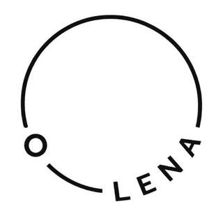

Trade Mark Journal No.2026/010 6 March 2026
UK00004340728 13 February 2026 (9,36,41,42)

- Class 9
- Downloadable computer software for decentralised publishing and knowledge-sharing platforms; downloadable software for creating, submitting, publishing, reviewing, curating and accessing digital content; downloadable computer software for collaboration and coordination of information and knowledge; downloadable computer applications for participation in decentralised knowledge networks; downloadable software enabling users to contribute, review, evaluate and curate information and media content; downloadable software for tracking contributions and reputation within online communities; downloadable software featuring incentive mechanisms for rewarding contributors and curators; downloadable digital tokens for use within decentralised knowledge and publishing platforms; downloadable digital files authenticated by non-fungible tokens (NFTs); downloadable software for accessing, interacting with and verifying non-fungible tokens (NFTs) within decentralised knowledge and publishing platforms; downloadable software for managing digital identities and credentials; downloadable software for accessing blockchain-based platforms; downloadable software for use in relation to decentralised protocols; downloadable software development kits for integrating digital token functionality into third-party applications; downloadable software for cryptographic authentication and verification of digital content; downloadable software for recording and verifying provenance of information using blockchain technology; downloadable software for managing user accounts and profiles in decentralised applications.
- Class 36
- Issuance of digital tokens for use within decentralised knowledge and publishing platforms and online communities; financial services relating to digital tokens used within decentralised knowledge and publishing platforms; financial services in connection with token-based incentive mechanisms within decentralised platforms.
- Class 41
- Publishing services; online publishing of articles, journals, research, commentary and informational content; provision of non-downloadable online publications; providing online platforms for the creation, submission, review, curation and dissemination of information and knowledge; providing online platforms for collaborative authorship and peer review of digital content; providing online communities for writers, researchers and contributors to publish and share information; provision of information and educational content via online platforms; arranging and conducting online discussions and forums relating to information, knowledge and current events; provision of online news and informational content; digital publishing services featuring token-based incentive and reward mechanisms for contributors; provision of online platforms for evaluating, reviewing and curating informational content; educational and informational services provided through decentralised knowledge platforms; providing online non-downloadable multimedia publications; organisation and presentation of user-generated content through online platforms.
- Class 42
- Providing online non-downloadable software platforms for decentralised publishing and knowledge-sharing; platform as a service (PaaS) featuring software for the creation, submission, review, curation and dissemination of digital content and information; software as a service (SaaS) services featuring software for collaborative authorship and peer review of informational content; providing online non-downloadable software for tracking contributions, reputation and performance of users within decentralised knowledge networks; providing online non-downloadable software featuring incentive and reward mechanisms for contributors and curators of information; providing online non-downloadable software for coordination of decentralised communities and collaborative projects; providing online non-downloadable software for verifying, authenticating and validating digital content using blockchain technology; providing online non-downloadable software for authentication and verification of digital content using non-fungible tokens (NFTs); data authentication services via blockchain technology; providing online non-downloadable software for management of digital identities and credentials; providing online non-downloadable software for decentralised governance and decision-making within online communities; providing online non-downloadable software for recording and verifying provenance of information and media content; providing online non-downloadable software for integration of digital tokens into publishing and knowledge platforms; hosting of decentralised applications; providing application programming interfaces (APIs) for integration with decentralised knowledge platforms; providing online non-downloadable software for user authentication and access control; providing online non-downloadable software for collaboration, review and evaluation of digital information; providing blockchain-based software platforms for coordination and funding of collaborative knowledge projects.
Knowledge Public Goods (Company Limited By Guarantee)
Representative: Simons Muirhead Burton LLP